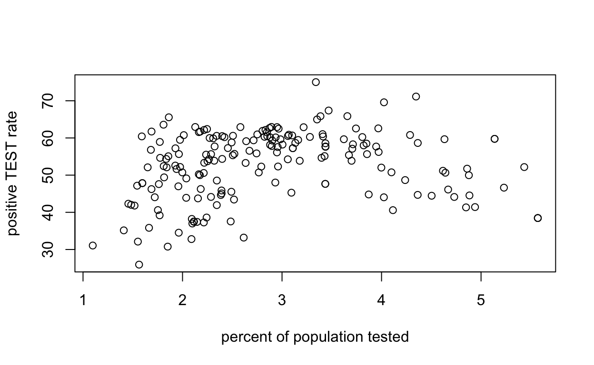

zcta <- zcta[!duplicated(zcta$MODZCTA),]In this lab, you will inspect and interact with some datasets that habe been compiled for you. The datasets loaded here were compiled using American Community Survey (ACS) census data, NYC COVID19 data (downloaded on April 23 from here: https://github.com/nychealth/coronavirus-data), and shape files for NYC zip codes (downloaded from here: https://data.cityofnewyork.us/widgets/i8iw-xf4u). You can see how all of these data were created, including how to add your own variables or change the regions, by reading the accompanying tutorials in more detail. The purpose of this lab is to give you a chance to run some code and play with some of the data, while bypassing the need to download and load everything on your own computer. There are three files loaded for you in this space:
head() function or square brackets to inspect the first 5 rows of the borough and zcta datasets.
head(borough, 5)
head(zcta, 5)
#or:
borough[1:5,]
zcta[1:5,]Try using the str() function below to look at the structure of each dataset. The term “structure” refers to the organization of a data set, which can be more complicated than a simple table. For example, it could have variables nested in other variables. When the data are in a table, str() will tell you about the names and types of variables.
str(borough)
str(zcta)head(round(zcta$Positive/zcta$Total*100,2))
head(zcta$zcta_cum.perc_pos)Another useful consistency check: the census data includes a “total” variable for most demographic variables (i.e., sex, age, income, race, education). In this dataset, we have collected the reported values for “Race_Total” (i.e., total of all race categories). Does this show the same number as the total population from the SEX BY AGE tables? Perhaps estimates based on race do not count everybody? Upon further inspection, these variables actually do have the same values:
head(zcta$Race_Total)
head(zcta$Total_Pop)That said, you might notice that there is another variable called Total_EducPop. This variable was imported as part of the group of variables related to educational attainment level, including Bachelors, Masters, Professional, and Doctorate degrees.
head(zcta$Total_Pop)
head(zcta$Total_EducPop)Note that the values in this column are smaller than the Population (equals Race_Total) columns. Looking at the documentation provided by the Census for this group of variables, it turns out the variables we were examining (college education) are recorded only for people over the age of 25. So the moral of the story is, don’t always trust the names of the variables created by someone else (in this case, us)!
This article from the intercept (https://theintercept.com/2020/04/09/nyc-coronavirus-deaths-race-economic-divide/) starts with two tables showing zip codes with the highest and lowest positive test rates. We can reproduce these tables using the code below (they look slightly different because our data is more recent than that used in the article and we are reporting median income rather than per-capita income). Nonetheless, they look fairly similar (and we see a similar pattern with respect to income disparities).
#5 highest
zcta %>%
mutate(Percent_Positive = round(Positive/Total*100,2)) %>%
select(MODZCTA, Total, Positive, Percent_Positive, Med_Income) %>%
arrange(desc(Percent_Positive)) %>%
head(5)
#5 lowest
zcta %>%
mutate(Percent_Positive = round(Positive/Total*100,2)) %>%
select(MODZCTA, Total, Positive, Percent_Positive, Med_Income) %>%
arrange(Percent_Positive) %>%
head(5)#5 highest
zcta %>%
mutate(Pos_Case_Rate = round(Positive/Total_Pop,4)) %>%
select(MODZCTA, Total_Pop, Positive, Pos_Case_Rate, Med_Income) %>%
arrange(desc(Pos_Case_Rate)) %>%
head(5)
#5 lowest
zcta %>%
mutate(Pos_Case_Rate = round(Positive/Total_Pop,4)) %>%
select(MODZCTA, Total_Pop, Positive, Pos_Case_Rate, Med_Income) %>%
arrange(Pos_Case_Rate) %>%
head(5)Once you do this, you’ll see that it does make a difference in which zip codes appear (although we still see a similar relationship between case rate and income). If you look at the data on a broader scale, the percent of tests that come back positive decreases as the number of tests administered increases. Therefore, we could imagine a situation where wealthy areas have more access to tests, leading to a lower positive test rate (relative to other areas) but a high rate of positive cases relative to the whole population (because more positive cases are found).
To see this, we can plot both the positive test rate and the positive case rate as a function of the overall testing rate:
plot(zcta$Total/zcta$Total_Pop*100,
zcta$zcta_cum.perc_pos,
xlab = "percent of population tested",
ylab = "positive TEST rate",
main = "")plot(zcta$Total/zcta$Total_Pop*100,
zcta$Positive/zcta$Total_Pop*100,
xlab = "percent of population tested",
ylab = "positive CASE rate",
main = "")It seems like, for zip codes where more than 3% of the population is being tested, the positive test rate does decrease as the testing rate increases; however, the lowest positive test rates are still occuring in the zip codes with the lowest testing rates. That’s all we’ll say about this here, but please feel free to investigate further! The main take-away for now is that your denominator matters.
Race is a complex subject and, in fact, race has many categorizations in the ACS dataset. A simplifying step, if we are intersted in associations between race and COVID-19 outcomes, is to compare one category against all the others. You could choose any race (e.g., proportions of non-Hispanic Asian are in the column NH_Asian). But we will concentrate on total population white, since a lot of the conversation around racial disparities centers on the degree to which a white majority is associated with privilege.
Suppose, then, that we want to look at racial composition in terms of proportion white, and in particular, we want to discretize this racial composition variable into three groups: low, medium, and high proportion white. This is the kind of thing that happens in a lot of media reports.
The code for this transformation looks a little complicated, but you should be able to follow the general idea. The mutate function is used to create new variables in an existing table (there are other ways to do this in R). The ntile function assigns each zipcode to one of our three groups based on rank-ordering (it is an implementation of cuts using quantiles), and the group_by and summarize functions agreggate the positive case rate over all of the zipcodes in the same group.
propwhite <- zcta %>%
mutate(White_Prop = round(White_Total/Race_Total,2)) %>%
mutate(White_Prop_Lev = ntile(White_Prop, 3)) %>%
group_by(White_Prop_Lev) %>%
summarise(Cases_per_1000 = round(sum(Positive)/sum(Total_Pop)*1000, 2)) %>%
na.omit()
propwhitepropwhite <- zcta %>%
mutate(White_Prop = round(White_Total/Race_Total,2)) %>%
mutate(White_Prop_Lev = ntile(White_Prop, 2)) %>%
group_by(White_Prop_Lev) %>%
summarise(Cases_per_1000 = round(sum(Positive)/sum(Total_Pop)*1000, 2)) %>%
na.omit()
propwhiteNotice that case rates are higher in zipcodes with a relatively low proportion of white people, and lower in zipcodes with a relatively high proportion of white people). Activity: Run the provided code. Then see if you can change it so that there are only 2 categories for the White_Prop variable.
inc <- zcta %>%
mutate(Med_Inc_Lev = ntile(Med_Income, 3)) %>%
group_by(Med_Inc_Lev) %>%
summarise(Cases_per_1000 = round(sum(Positive)/sum(Total_Pop)*1000, 2)) %>%
na.omit()
incIn the above examples of one-way tables, we take a single variable, such as proportion-white or median-income, and discretize that variable into levels. We then group the zipcodes (which are our data cases) by level, and display this COVID case-rate aggregated over the zipcodes in each level.
Question: based on the code that we used, are we “weighing” each zipcode by its population, or are we weighing each zipcode equally?
Let’s now try to reproduce a 2-way table, looking simultaneously at the variables of race and income. To make a two way table, of course we need to create the two groupings (proportion-white and median-income) as before. Now when we use the group_by function, we include both variables.
inc_propwhite <- zcta %>%
select(White_Total, Race_Total, Med_Income, Positive, Total_Pop) %>%
na.omit() %>%
mutate(White_Prop = round(White_Total/Race_Total, 3)*100) %>%
mutate(White_Prop_Lev = ntile(White_Prop, 3)) %>%
mutate(Med_Inc_Lev = ntile(Med_Income, 3)) %>%
group_by(White_Prop_Lev, Med_Inc_Lev) %>%
summarise(Cases_per_1000 = round(sum(Positive)/sum(Total_Pop)*1000, 2)) %>%
spread(White_Prop_Lev, Cases_per_1000, fill=0)
inc_propwhite[,1] <- c("Low Income", "Med Income", "High Income")
colnames(inc_propwhite) <- c("inc/race","Low Prop White", "Med Prop White", "High Prop White")
inc_propwhitedat <- zcta %>%
select(White_Total, Race_Total, Med_Income, Positive, Total_Pop) %>%
na.omit() %>%
mutate(White_Prop = round(White_Total/Race_Total, 3)*100) %>%
mutate(White_Prop_Lev = ntile(White_Prop, 3))
plot(dat$Med_Income,
dat$Positive/dat$Total_Pop*100,
col=dat$White_Prop_Lev+3,
xlab = "Median Income",
ylab = "Case Rate",
pch = 16)
legend("topright",
col = c(4,5,6),
pch = 16,
legend = c("Low Prop White",
"Med Prop White",
"High Prop White"))For a moment, let’s come back to the one-way table of the proportion of the population that is white. The point of that tabulation was to explore whether there was a relationship between race composition and COVID-19 incidence.
Here is another way we could have conducted that analysis. In this version, we make a two-way table of race and case rate. That is, we also discretize case rate as, for example, low and high. In the cells of this table, we will count how many of the roughly 200 zipcodes fit the joint categories.
The code below does the following: First, we divide the zip codes into two equally sized groups based on the proportion of the population that is white. This is also called a median-split. Half of the zip codes are classified as being high proportion white, and half are classified as low proportion white Then, we do the same thing by case rate. Half of the zip codes are classified as having a high case rate and half are classified as having a low case rate. Finally, we construct a 2-way table of these new categorical variables, where the values in the table are counts of zip codes. For example, there are 38 zip codes that are classified as having a low case rate AND a low proportion of white people.
propwhite_take2 <- zcta %>%
transmute(White_Prop = round(White_Total/Race_Total*100, 2),
Cases_per_1000 = round(Positive/Total_Pop*1000, 2)) %>%
na.omit() %>%
mutate(White_Prop_Lev = ntile(White_Prop, 2),
CaseRate_Lev = ntile(Cases_per_1000, 2)) %>%
select(White_Prop_Lev, CaseRate_Lev) %>%
table()
propwhite_take2We observe something that may or may not be surprising: There are more zip codes with a high proportion of white people and low case rate or low proportion of white people and high case rate (as compared to the other two categories). This suggests that zip codes with a higher proportion of non-white residents tend to have higher case rates. Can we test whether these differences are meaningful?
Let’s start with the value in the “low proportion white, high case rate category” (which is 57).
We’ll create a fake dataset that looks like the observed data (it would produce the same table as above), but then we will randomly reassign the levels of “proportion white” 1000 times, each time storing the number of zip codes in the low-white/high-case category. Then we can plot a histogram of the simulated values (with a vertical line at our observed value of 57). We can also calculate the proportion of simulated values greater than or equal to 57. See if you can follow the code below:
thresholdValue <- propwhite_take2[2,1]
reducedZCTA <- zcta %>%
transmute(White_Prop = round(White_Total/Race_Total*100, 1),
Cases_per_1000 = round(Positive/Total_Pop*1000, 2)) %>%
na.omit()
set.seed(333)
simvals <- vector()
for(i in 1:1000){
# reshuffle the proportion white
reducedZCTA$White_Prop <- sample(reducedZCTA$White_Prop)
# then recompute median split
simdata <- reducedZCTA %>%
transmute(White_Prop_Lev = ntile(White_Prop, 2),
CaseRate_Lev = ntile(Cases_per_1000, 2))
simvals[i] <- table(simdata)[2,1]
}
hist(simvals, xlim=c(35,65), main="Zipcode race permutation results",
xlab="No. of cases with low-white and high-case split")
abline(v=thresholdValue, lwd=2, col="blue")
#proportion of simulated values greater than threshold
sum(simvals>=thresholdValue)/1000We note that 0% of our simulated values were greater than 57. It’s therefore very unlikely that we would have observed this large of a value by random chance (if the truth was that there was no relationship between the proportion of the population that is white and the case rate). However, this cannot tell us WHY this relationship exists (there are many theories that have been proposed).
propwhite2 <- zcta %>%
mutate(White_Prop = round(White_Total/Race_Total*100, 2)) %>%
mutate(White_Prop_Lev = ntile(White_Prop, 2)) %>%
na.omit() %>%
mutate(Cases_per_1000 = round(Positive/Total_Pop*1000, 2)) %>%
mutate(CaseRate_Lev = ntile(Cases_per_1000, 2)) %>%
group_by(White_Prop_Lev, CaseRate_Lev) %>%
summarise(N_Zips = n()) %>%
spread(White_Prop_Lev, N_Zips, fill=0)
# label the row and column names
propwhite2[,1] <- c("Low Case Rate", "High Case Rate")
colnames(propwhite2) <- c("case/race", "Low Prop White", "High Prop White")
propwhite2propwhite2 <- zcta %>%
mutate(White_Prop = round(White_Total/Race_Total*100, 2)) %>%
mutate(White_Prop_Lev = ntile(White_Prop, 3)) %>%
na.omit() %>%
mutate(Cases_per_1000 = round(Positive/Total_Pop*1000, 2)) %>%
mutate(CaseRate_Lev = ntile(Cases_per_1000, 3)) %>%
group_by(White_Prop_Lev, CaseRate_Lev) %>%
summarise(N_Zips = n()) %>%
spread(White_Prop_Lev, N_Zips, fill=0)
# label the row and column names: 3 levels
propwhite2[,1] <- c("Low Case Rate", "Medium Case Rate", "High Case Rate")
colnames(propwhite2) <- c("case/race", "Low Prop White", "Medium Prop White", "High Prop White")
propwhite2getShapeColors <- function(data, nbreaks=5, missingcol="gray88", rdgrbl=c(0,0,1), mycolors=NULL, max_opac=0.55){
if(length(nbreaks) == 1) {
mybreaks <- c(-1, quantile(data,
probs = seq(0, 1, length.out=nbreaks+1),
na.rm = T))
} else {
mybreaks <- c(-1,nbreaks)
}
if(!is.null(mycolors)){
mycols <- mycolors
} else {
mycols <- rgb(rdgrbl[1],rdgrbl[2],rdgrbl[3],
seq(0.05,max_opac, length.out = length(mybreaks)-1))
}
mycols[1] <- missingcol
data[is.na(data)] <- -.1
mycolorscheme <- cut(data, mybreaks) %>%
as.numeric()
mycolorscheme <- mycols[mycolorscheme]
levs <- levels(cut(data, mybreaks))
levs[1] <- "No Data"
return(list(mycolorscheme, levs, mycols))
}col_lev <- getShapeColors(round(zcta$Positive/zcta$Total_Pop*1000,1),
5,
"white",
mycolors=viridis(6))
plot(NYC_zips, col = col_lev[[1]],
main = "Positive Tests Per 1000 People by Zip Code",
cex = 10, lwd=0.01)
legend("topleft",
legend = col_lev[[2]],
fill = col_lev[[3]],
cex = 0.8,
title = "Positive Tests per 1000 People")col_lev <- getShapeColors(zcta$Bach_plus_prop,
5,
"white",
rdgrbl=c(0,0,1),
max_opac = .8)
plot(NYC_zips, col = col_lev[[1]],
main = "Percent of Population with a College Degree",
cex = 10, lwd=0.01)
legend("topleft",
legend = col_lev[[2]],
fill = col_lev[[3]],
cex = 0.8,
title = "% Non-White")An open-ended question about trying to visualize these two things on a plot simultaneously: Suppose that we wanted to see how well the two maps above “line up” (without scrolling back and forth between them). Here’s one way we might try to do that (although maybe there are better ways.. or maybe this is an ill-advised endeavor altogether): We can plot the case rate quintile as increasingly dark shades of transparant red, and the proportion with a college degree as increasingly dark shades of transparant blue. Finally, we can overlay the maps, one on top of the other. Then any zip code with similar levels of these two variables will appear purple, while zip codes with a high-level of one variable, but not the other, will appear more clearly red or blue. Because the “hot” areas of these two maps do not line up that well, we expect a red/blue map as opposed to a purple one.
col_lev1 <- getShapeColors(round(zcta$Positive/zcta$Total_Pop*1000,1),
5,
rdgrbl = c(1,0,0))
col_lev2 <- getShapeColors(zcta$Bach_plus_prop,
5,
rdgrbl = c(0,0,1))
par(mfrow=c(1,3))
plot(NYC_zips, col = col_lev1[[1]],
main = "",
cex = 10, lwd=0.01)
legend("topleft",
legend = col_lev1[[2]],
fill = col_lev1[[3]],
cex = 0.8,
title = "Pos Tests per 1000")
plot(NYC_zips, col = col_lev2[[1]],
main = "",
cex = 10, lwd=0.01)
legend("topleft",
legend = col_lev2[[2]],
fill = col_lev2[[3]],
cex = 0.8,
title = "% College Deg")
plot(NYC_zips, col = col_lev1[[1]],
main = "",
cex = 10, lwd=0.01)
plot(NYC_zips, col = col_lev2[[1]],
main = "",
cex = 10, lwd=0.01, add = T)col_lev1 <- getShapeColors(round(zcta$Positive/zcta$Total_Pop*1000,1),
5,
rdgrbl = c(1,0,0))
col_lev2 <- getShapeColors(zcta$Bach_plus_prop,
5,
rdgrbl = c(0,0,1))
par(mfrow=c(1,2))
plot(NYC_zips, col = col_lev1[[1]],
main = "",
cex = 10, lwd=0.01)
plot(NYC_zips, col = col_lev2[[1]],
main = "",
cex = 10, lwd=0.01, add=T)
plot(zcta$Bach_plus_prop,
round(zcta$Positive/zcta$Total_Pop*1000,1),
col = col_lev1[[1]],
main = "",
xlab = "Proportion College Degree",
ylab = "Pos Cases per 1000 Ppl",
pch = 16)
points(round(zcta$Bach_plus_prop,1),
round(zcta$Positive/zcta$Total_Pop*1000,1),
col = col_lev2[[1]],
pch = 16)col_lev1 <- getShapeColors(round(zcta$Positive/zcta$Total_Pop*1000,1),
5,
rdgrbl = c(1,0,0))
col_lev2 <- getShapeColors((100-zcta$Bach_plus_prop),
5,
rdgrbl = c(0,0,1))
par(mfrow=c(1,2))
plot(NYC_zips, col = col_lev1[[1]],
main = "",
cex = 10, lwd=0.01)
plot(NYC_zips, col = col_lev2[[1]],
main = "",
cex = 10, lwd=0.01, add=T)
plot((100-zcta$Bach_plus_prop),
round(zcta$Positive/zcta$Total_Pop*1000,1),
col = col_lev1[[1]],
main = "",
xlab = "Proportion College Degree",
ylab = "Pos Cases per 1000 Ppl",
pch = 16)
points((100-zcta$Bach_plus_prop),
round(zcta$Positive/zcta$Total_Pop*1000,1),
col = col_lev2[[1]],
pch = 16)Let’s begin by taking a closer look at some of the scatter plots from earlier sections. For example, we looked at this plot in the “case rates by zip codes” section. The plot shows the positive test rate (positive tests/total tests) on the y-axis and the percent of the population tested (total tests/population).

Recall that we first saw this scatter plot while considering how the positive case rate (positive tests/population) is different from a positive test rate (positive tests/total tests). In particular, the rank-order of zip code neighborhoods is different depending on which measure we use.
Below we produce two scatterplots side by side, and this time we can add a smoothing curve to highlight the trends.
par(mfrow=c(1,2))
scatter.smooth(zcta$Total/zcta$Total_Pop*100,
zcta$zcta_cum.perc_pos,
span = 0.75,
xlab = "% of population tested",
ylab = "positive TEST rate",
main = "",
lpars = list(col = "red", lwd = 3))
scatter.smooth(zcta$Total/zcta$Total_Pop*100,
zcta$Positive/zcta$Total_Pop*100,
span = 0.75,
xlab = "% of population tested",
ylab = "positive CASE rate",
main = "",
lpars = list(col = "red", lwd = 3))The red line roughly follows the “center” of the data, allowing us to see that increasing and decreasing trend in the test rate more clearly. The case rate does not decrease, although it does start to level off a bit. As it must. The larger our sampling proportion for testing, the closer we get to the true proportion of positive cases.
However, as you can see clearly from the scatter plots, the highest-ranked zipcodes by test rate are those with testing rates around 3%. In contrast, the zip codes with the highest case rate are those that tested the most.
In neither case can we say that the sample of people tested is representative of the population. First of all, the sickest people are the first ones to get tested. When tests were not widely available, they were also limited to essential workers. This could raise the rate of testing in neighborhoods where those workers live. On the other hand, wealthier people might have access to testing in private labs, which could raise the rate of testing in wealthier neighborhoods.
We now revisit another scatter plot from the “tables by race and income” section.
In this plot, we see an overall negative association between case rates and median income. By negative association, we mean that as one variable goes up, the other goes down; in this case, as median income increases, we the case rate tends to decrease.
However, we also saw from our two-way table that, when we split the zip codes into groups based on proportion white, this relationship between income and case rate varies within groups. Among the zip codes with the lowest proportion of white residents (the darkest blue dots in the plot), there is actually a positive association between median income and case rate. If you look only at the dark blue dots, then it would appear that higher median incomes are actually associated with higher case rates.
To recap: if you drew a line through all the data, it would have a negative slope. However, a line through those dark blue dots would now go from the lower left to upper right (a positive slope).
Let’s actually draw those lines on the plot. The blue and purple lines are smooth curves based only the points with the same color:
dat <- zcta %>%
select(White_Total, Race_Total, Med_Income, Positive, Total_Pop) %>%
na.omit() %>%
mutate(White_Prop = round(White_Total/Race_Total, 3)*100) %>%
mutate(White_Prop_Lev = ntile(White_Prop, 3)) %>%
mutate(Pos_Case_Rate = Positive/Total_Pop*100)
plot(dat$Med_Income,
dat$Pos_Case_Rate,
col=dat$White_Prop_Lev+3,
xlab = "Median Income",
ylab = "Case Rate",
pch = 16)
lines(loess.smooth(dat[dat$White_Prop_Lev==1,"Med_Income"],
dat[dat$White_Prop_Lev==1,"Pos_Case_Rate"], span=3), col=4, lwd=2)
lines(loess.smooth(dat[dat$White_Prop_Lev==3,"Med_Income"],
dat[dat$White_Prop_Lev==3,"Pos_Case_Rate"], span=3), col=6, lwd=2)
legend("topright",
col = c(4,5,6),
pch = 16,
legend = c("Low Prop White",
"Med Prop White",
"High Prop White"))Now that we’ve seen how scatter plots can be helpful visualizations when we want to better understand fine-grained relationships between variables, let’s use some scatter plots to re-examine the relationship between the racial composition of a given zip code and the case rate.
We saw previously that there appears to be a negative association between the positive case rate and proportion of the population that identifies as white by zip code. Let us shift our attention to the black and Hispanic population. Reports using data from NYC have shown that black and Hispanic communities are experiencing higher rates of covid infection and mortality; therefore, we expect to see a positive association this time.
We can visualize this relationship on a scatter plot by representing each zip code as a dot and plotting the positive case rate against the proportion of the population that is black of Hispanic By adding a smoothing line in blue, we can see a positive association between these variables.
scatter.smooth(zcta$NH_Black+zcta$Hisp,
round(zcta$Positive/zcta$Total_Pop*1000,1),
xlab="percent black + Hispanic",
ylab="pos cases per 1000 ppl",
span=3, lpars=list(lwd=3, col="blue"),
pch=16)Some possible mediators for these racial disparities are income level and, related to income, level of educational attainment. Some have speculated that differences in case rates by race could be “explained” by income and education inequality among different racial groups. If true, this would not mean that varying outcomes are fair, because they are not directly race-based. The difference in health outcomes would still be indirectly race-based. But whereas policy cannot change the racial composition of a neighborhood, it can be directed to improve educational attainment and wealth. Thus, these mediators are levers for change.
To explore whether income and education variables can explain the observed racial disparities, let’s first look at the relationship between these variables and case rates. We see that there are negative associations for both median income and college education with case rates.
par(mfrow=c(1,2))
scatter.smooth(zcta$Med_Income,
round(zcta$Positive/zcta$Total_Pop*1000,1),
xlab="median income",
ylab="pos cases per 1000 ppl",
span=3, lpars=list(lwd=3, col="blue"),
pch=16)
scatter.smooth(zcta$Bach_plus_prop,
round(zcta$Positive/zcta$Total_Pop*1000,1),
xlab="share of college degree",
ylab="pos cases per 1000 ppl",
span=3, lpars=list(lwd=3, col="blue"),
pch=16)Finally, we can look at the relationship between income and educational outcomes with the racial composition of zip codes. This time, we see that zip codes with a higher proportion of black and Hispanic residents tend to have lower incomes and college attainment.
par(mfrow=c(1,2))
scatter.smooth(
zcta$NH_Black+zcta$Hisp,
zcta$Med_Income,
xlab="% black or Hispanic",
ylab="median income",
span=3, lpars=list(lwd=3, col="blue"),
pch=16)
scatter.smooth(
zcta$NH_Black+zcta$Hisp,
zcta$Bach_plus_prop,
xlab="% black or Hispanic",
ylab="share of college degree",
span=3, lpars=list(lwd=3, col="blue"),
pch=16)This all provides some suggestive evidence that education and income inequality may be mediating some of the racial disparities with regard to case rate. There are more advanced methods of data science (e.g., multiple regression, mediation analysis) to dive deeper into the explanation of racial disparities. But you will need to take a next course to master those!
str(zcta) inc <- zcta %>%
mutate(Med_Inc_Lev = ntile(Med_Income, 3)) %>%
group_by(Med_Inc_Lev) %>%
summarise(Cases_per_1000 = round(sum(Positive)/sum(Total_Pop)*1000, 2)) %>%
na.omit()
incinc_propwhite <- zcta %>%
select(White_Total, Race_Total, Med_Income, Positive, Total_Pop) %>%
na.omit() %>%
mutate(White_Prop = round(White_Total/Race_Total, 3)*100) %>%
mutate(White_Prop_Lev = ntile(White_Prop, 3)) %>%
mutate(Med_Inc_Lev = ntile(Med_Income, 3)) %>%
group_by(White_Prop_Lev, Med_Inc_Lev) %>%
summarise(Cases_per_1000 = round(sum(Positive)/sum(Total_Pop)*1000, 2)) %>%
spread(White_Prop_Lev, Cases_per_1000, fill=0)
inc_propwhite[,1] <- c("Low Income", "Med Income", "High Income")
colnames(inc_propwhite) <- c("inc/race","Low Prop White", "Med Prop White", "High Prop White")
inc_propwhiteplot(zcta$Med_Income,
round(zcta$Positive/zcta$Total_Pop*1000,1),
xlab="median income",
ylab="pos cases per 1000 ppl",
pch=16)col_lev <- getShapeColors(round(zcta$Positive/zcta$Total_Pop*1000,1),
5,
"white",
rdgrbl = c(0,1,1),
max_opac = 0.9)
plot(NYC_zips, col = col_lev[[1]],
main = "Positive Tests Per 1000 People by Zip Code",
cex = 10, lwd=0.01)
legend("topleft",
legend = col_lev[[2]],
fill = col_lev[[3]],
cex = 0.8,
title = "Positive Tests per 1000 People")